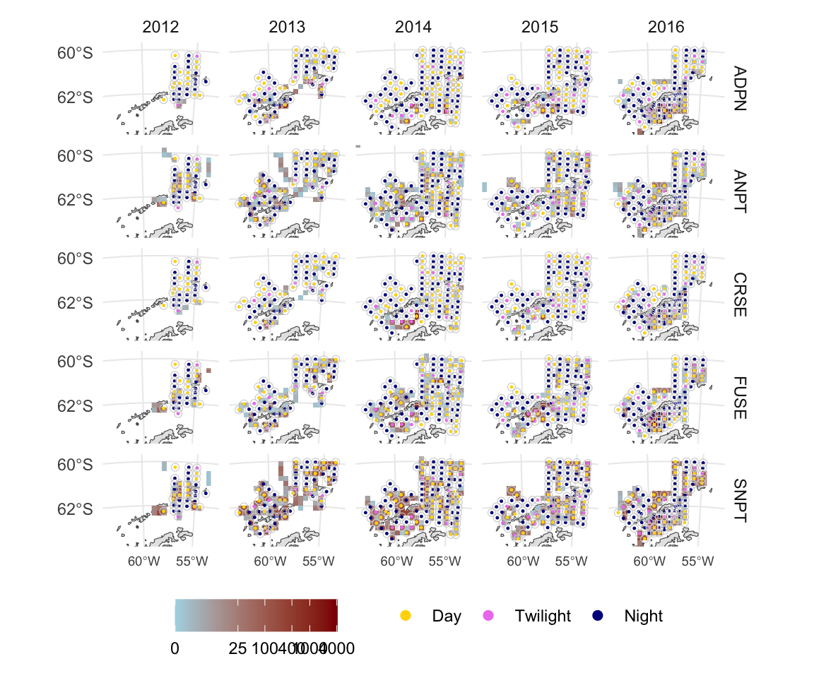
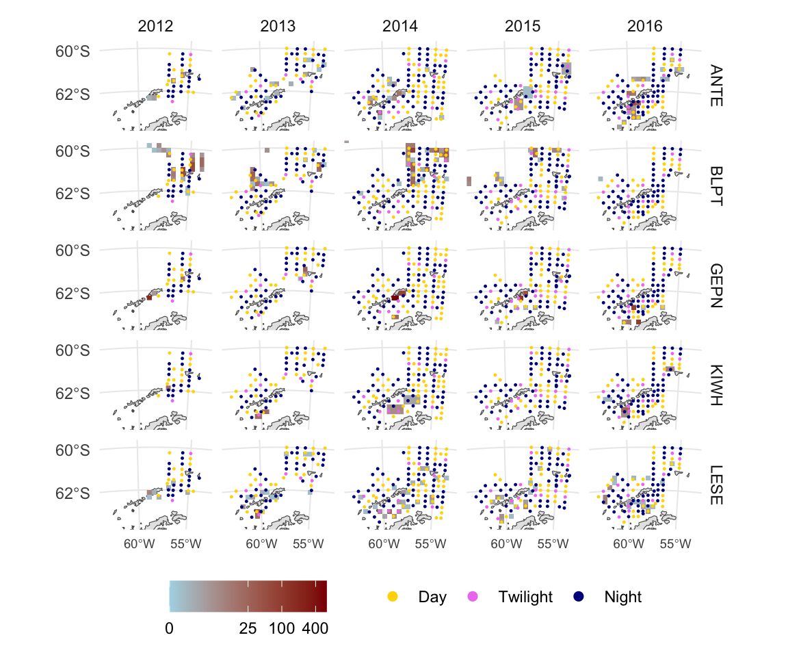
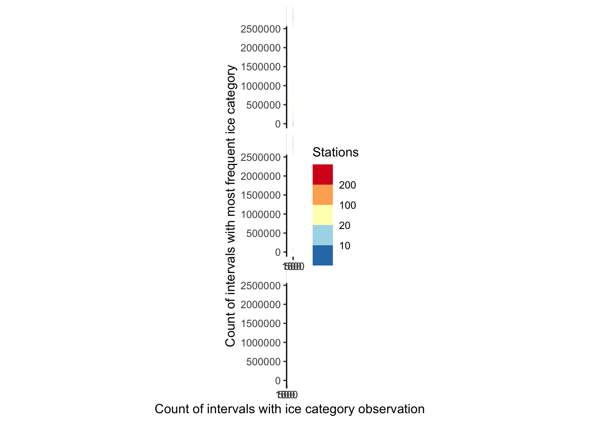
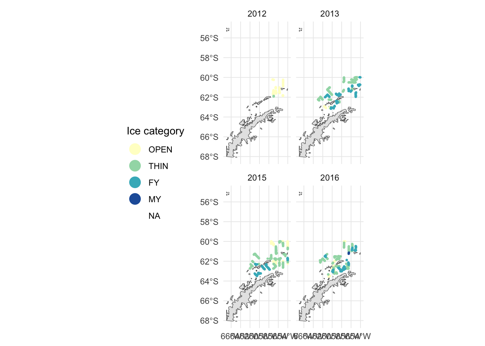
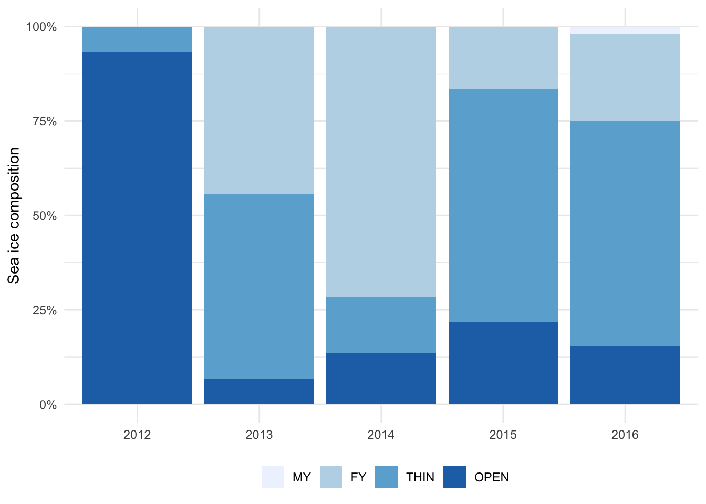
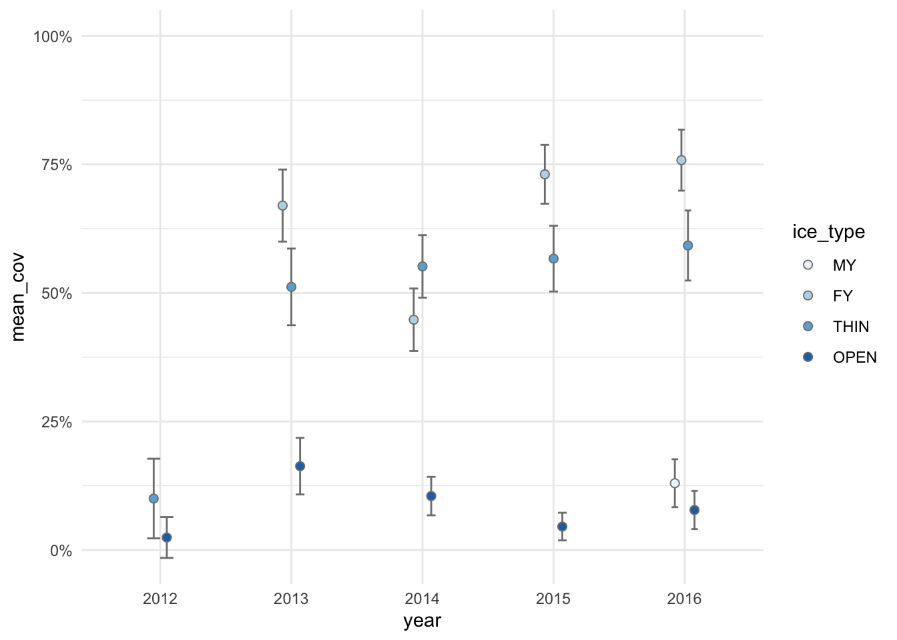

Code
ice_qa <- zoop_sf %>%
right_join(stations_ice, by = "amlr.station") %>%
distinct(amlr.station, ice_type, ice_intervals, ice_type_freq) %>%
mutate(n_obs = ice_intervals,
n_mode = round(ice_type_freq, digits = 0))Station locations on predator (five most abundant) count maps. Spatially restricted to station transects.
top_five <- predators_agg %>%
group_by(species) %>%
summarize(total_count = sum(count)) %>%
arrange(desc(total_count)) %>%
slice(1:5)
topfive_sf <- predators_agg %>%
semi_join(top_five, by = "species") %>%
latlon_to_sf(coords = c("lon_mean", "lat_mean"))
topfive_stars <- rasterize_counts(topfive_sf, res = 2.5e4)
zoop_sf <- latlon_to_sf(zoop,
coords = c("dec.longitude", "dec.latitude")) %>%
st_transform(ant_proj()) %>%
rename(year = Year)
zoop_buffers_20k <- st_buffer(zoop_sf, 20e3)
map_lim <- st_bbox(zoop_sf) %>%
project_bbox() %>%
expand_bbox(factor = 1.2)
ant_basemap(map_lim) +
stars::geom_stars(aes(fill = count), data = topfive_stars) +
geom_sf(aes(color = time.of.day), zoop_sf, size = 0.2) +
scale_x_continuous(breaks = c(-65, -60, -55)) +
scale_y_continuous(breaks = c(-66, -64, -62, -60)) +
scale_fill_gradient(low = "lightblue", high = "darkred",
trans = scales::pseudo_log_trans(),
breaks = c(0, 25, 100, 400, 1000, 4000),
na.value = NA) +
scale_color_manual(values = tod_pal()) +
guides(color = guide_legend(override.aes = list(size = 2))) +
coord_ant(map_lim) +
facet_grid(species ~ year) +
expand_limits(fill = 0) +
theme(axis.text.x = element_text(size = 7),
legend.position = "bottom",
legend.title = element_blank())
As above, but for species of interest (Gentoo Penguins, Blue Petrels, Antarctic Terns, Leopard Seals, and Killer Whales).
soi <- c("GEPN", "BLPT", "ANTE", "LESE", "KIWH")
soi_sf <- predators_agg %>%
filter(species %in% soi) %>%
latlon_to_sf(coords = c("lon_mean", "lat_mean"))
soi_stars <- rasterize_counts(soi_sf, res = 2.5e4)
ant_basemap(map_lim) +
stars::geom_stars(aes(fill = count), data = soi_stars) +
geom_sf(aes(color = time.of.day), zoop_sf, size = 0.2) +
scale_x_continuous(breaks = c(-65, -60, -55)) +
scale_y_continuous(breaks = c(-66, -64, -62, -60)) +
scale_fill_gradient(low = "lightblue", high = "darkred",
trans = scales::pseudo_log_trans(),
breaks = c(0, 25, 100, 400, 1000, 4000),
na.value = NA) +
scale_color_manual(values = tod_pal()) +
guides(color = guide_legend(override.aes = list(size = 2))) +
coord_ant(map_lim) +
facet_grid(species ~ year) +
expand_limits(fill = 0) +
theme(axis.text.x = element_text(size = 7),
legend.position = "bottom",
legend.title = element_blank())
ice_qa <- zoop_sf %>%
right_join(stations_ice, by = "amlr.station") %>%
distinct(amlr.station, ice_type, ice_intervals, ice_type_freq) %>%
mutate(n_obs = ice_intervals,
n_mode = round(ice_type_freq, digits = 0))Each station was associated with the modal ice type (multi-year, first-year, thin, or open) from the underway observations. This figure shows how frequent the modal ice type was at each station. The two grey lines represent 1:1 and 2:1. Stations falling on the upper line had uniform ice category observations i.e., every interval within 15 km had the same ice category. Stations falling below the lower line had highly mixed ice category observations i.e., the most frequent ice category was observed at less than half the intervals within 15 km of the station.
The frequency of the modal ice type was 90% or greater for 57.8% of stations. The modal ice type was <50% frequency at just 10 stations (<5% of total stations).
ggplot(ice_qa, aes(n_obs, n_mode)) +
geom_abline(slope = c(1, 0.5), intercept = 0, color = "grey50") +
geom_point(alpha = 0.5) +
labs(x = "Count of intervals with ice category observation",
y = "Count of intervals with most frequent ice category") +
coord_fixed() +
facet_wrap(~ ice_type, ncol = 2) +
theme_classic()
ice_sf <- station_effort %>%
select(amlr.station, year) %>%
right_join(stations_ice, by = "amlr.station")
ant_basemap(map_lim) +
geom_sf(aes(color = ice_type),
ice_sf,
size = 0.5) +
scale_color_brewer("Ice category", palette = "YlGnBu") +
guides(color = guide_legend(override.aes = list(size = 5))) +
facet_wrap(~ year) +
theme(legend.position = "left")
ice_type_grand_total_row <- stations_ice %>%
mutate(YEAR = str_extract(amlr.station, "AMLR([0-9]{4}).*", 1)) %>%
count(ice_type) %>%
pivot_wider(names_from = "ice_type",
values_from = "n",
values_fill = 0) %>%
mutate(TOTAL = OPEN + THIN + FY + MY,
across(-TOTAL, \(x) x / TOTAL),
YEAR = "Total")
stations_ice %>%
mutate(YEAR = str_extract(amlr.station, "AMLR([0-9]{4}).*", 1)) %>%
count(YEAR, ice_type) %>%
pivot_wider(names_from = "ice_type",
values_from = "n",
values_fill = 0) %>%
mutate(TOTAL = OPEN + THIN + FY + MY,
across(c(OPEN, THIN, FY, MY), \(x) x / TOTAL)) %>%
rbind(ice_type_grand_total_row) %>%
mutate(across(-c(TOTAL, YEAR), scales::percent)) %>%
knitr::kable()| YEAR | OPEN | THIN | FY | MY | TOTAL |
|---|---|---|---|---|---|
| 2012 | 93.3% | 6.7% | 0.0% | 0.00% | 15 |
| 2013 | 6.7% | 48.9% | 44.4% | 0.00% | 45 |
| 2014 | 13.4% | 14.9% | 71.6% | 0.00% | 67 |
| 2015 | 21.7% | 61.7% | 16.7% | 0.00% | 60 |
| 2016 | 15.4% | 59.6% | 23.1% | 1.92% | 52 |
| Total | 19.7% | 42.3% | 37.7% | 0.42% | 239 |
stations_ice %>%
mutate(year = str_extract(amlr.station, "AMLR([0-9]{4}).*", 1)) %>%
count(year, ice_type) %>%
group_by(year) %>%
mutate(frac = n / sum(n)) %>%
ungroup() %>%
mutate(ice_type = fct_rev(ice_type)) %>%
ggplot(aes(year, frac, fill = ice_type)) +
geom_col() +
scale_fill_brewer(palette = "Blues") +
scale_y_continuous("Sea ice composition", labels = scales::percent) +
theme_minimal() +
theme(axis.title.x = element_blank(),
legend.position = "bottom",
legend.title = element_blank())
stations_ice %>%
mutate(year = str_extract(amlr.station, "AMLR([0-9]{4}).*", 1)) %>%
group_by(year, ice_type) %>%
summarize(mean_cov = mean(ice_coverage) / 10,
n = n(),
.groups = "drop_last") %>%
mutate(n = sum(n),
se_cov = sqrt(mean_cov * (1 - mean_cov) / n)) %>%
ungroup() %>%
mutate(ice_type = fct_rev(ice_type)) %>%
ggplot(aes(year, mean_cov, fill = ice_type)) +
geom_errorbar(aes(ymin = mean_cov - se_cov, ymax = mean_cov + se_cov),
width = 0.2,
color = "grey50",
position = "dodge") +
geom_point(size = 2,
shape = 21,
color = "grey50",
position = position_dodge(width = 0.2)) +
scale_fill_brewer(palette = "Blues") +
scale_y_continuous(limits = c(NA, 1),
labels = scales::percent) +
theme_minimal() +
theme()
stations_ice %>%
mutate(year = str_extract(amlr.station, "AMLR([0-9]{4}).*", 1)) %>%
group_by(year) %>%
summarize(mean = mean(ice_coverage),
sd = sd(ice_coverage),
.groups = "drop") %>%
mutate(mean_sd = str_glue("{format(mean, digits = 2)} \U00B1 {format(sd, digits = 2)}")) %>%
knitr::kable()| year | mean | sd | mean_sd |
|---|---|---|---|
| 2012 | 0.2931909 | 0.4293444 | 0.29 ± 0.43 |
| 2013 | 5.5876881 | 2.1224223 | 5.59 ± 2.12 |
| 2014 | 4.1721131 | 2.5027168 | 4.17 ± 2.50 |
| 2015 | 4.8113233 | 3.1830837 | 4.81 ± 3.18 |
| 2016 | 5.4245213 | 2.9414936 | 5.42 ± 2.94 |
Total of 245 stations. Breakdown by year:
predators_stations %>%
distinct(amlr.station) %>%
mutate(year = str_extract(amlr.station, "AMLR([0-9]{4}).*", 1)) %>%
count(year)# A tibble: 5 × 2
year n
<chr> <int>
1 2012 19
2 2013 47
3 2014 68
4 2015 60
5 2016 51survey_nmi <- predators_stations %>%
distinct(amlr.station, survey_nmi) %>%
pull(survey_nmi)
mean_nmi <- format(mean(survey_nmi), digits = 3)
sd_nmi <- format(sd(survey_nmi), digits = 3) 16.3 \(\pm\) 5.56 nm of survey effort associated with each station.
percent <- partial(scales::percent, accuracy = 0.1)
ice_type_lookup = c(
OPEN = "Open water",
THIN = "Thin ice",
FY = "First-year ice",
MY = "Multi-year ice"
)
ice_table <- stations_ice %>%
mutate(year = str_extract(amlr.station, "AMLR([0-9]{4}).*", 1)) %>%
group_by(year, ice_type) %>%
summarize(n_year_type = n(),
ice_mean = mean(ice_coverage / 10),
.groups = "drop_last") %>%
mutate(n_year = sum(n_year_type),
ice_se = sqrt(ice_mean * (1 - ice_mean) / n_year)) %>%
ungroup() %>%
transmute(year,
ice_type = ice_type_lookup[ice_type],
ice_val = str_glue("{n_year_type} ({percent(ice_mean)} \U00B1 {percent(ice_se)})")) %>%
pivot_wider(names_from = ice_type,
values_from = ice_val,
values_fill = "0") %>%
rbind(
stations_ice %>%
mutate(year = str_extract(amlr.station, "AMLR([0-9]{4}).*", 1)) %>%
group_by(ice_type) %>%
summarize(n_type = n(),
ice_mean = mean(ice_coverage / 10)) %>%
mutate(ice_se = sqrt(ice_mean * (1 - ice_mean) / sum(n_type)),
ice_val = str_glue("{n_type} ({percent(ice_mean)} \U00B1 {percent(ice_se)})")) %>%
transmute(year = "Total", ice_type = ice_type_lookup[ice_type], ice_val = str_glue("{n_type} ({percent(ice_mean)} \U00B1 {percent(ice_se)})")) %>%
pivot_wider(names_from = ice_type,
values_from = ice_val)
)
effort_table <- predators_stations %>%
distinct(amlr.station, survey_nmi) %>%
mutate(year = str_extract(amlr.station, "AMLR([0-9]{4}).*", 1)) %>%
group_by(year) %>%
summarize(`Stations sampled` = n(),
mean_nmi = mean(survey_nmi),
sd_nmi = sd(survey_nmi),
`Effort per station (nmi)` = str_glue("{sprintf('%0.1f', mean_nmi)} \U00B1 {sprintf('%0.1f', sd_nmi)}")) %>%
select(year, `Stations sampled`, `Effort per station (nmi)`) %>%
rbind(
predators_stations %>%
distinct(amlr.station, survey_nmi) %>%
mutate(year = str_extract(amlr.station, "AMLR([0-9]{4}).*", 1)) %>%
summarize(
year = "Total",
`Stations sampled` = n(),
`Effort per station (nmi)` = str_glue("{sprintf('%0.1f', mean(survey_nmi))} \U00B1 {sprintf('%0.1f', sd(survey_nmi))}")
)
)
effort_table %>%
left_join(ice_table, by = "year") %>%
knitr::kable() %>%
kableExtra::add_header_above(c(" ", "Survey effort" = 2, "Ice conditions" = 4))| year | Stations sampled | Effort per station (nmi) | Open water | Thin ice | First-year ice | Multi-year ice |
|---|---|---|---|---|---|---|
| 2012 | 19 | 18.8 ± 4.8 | 14 (2.4% ± 4.0%) | 1 (10.0% ± 7.7%) | 0 | 0 |
| 2013 | 47 | 20.8 ± 7.3 | 3 (16.3% ± 5.5%) | 22 (51.2% ± 7.5%) | 20 (67.0% ± 7.0%) | 0 |
| 2014 | 68 | 14.4 ± 3.8 | 9 (10.5% ± 3.7%) | 10 (55.2% ± 6.1%) | 48 (44.8% ± 6.1%) | 0 |
| 2015 | 60 | 15.0 ± 4.6 | 13 (4.6% ± 2.7%) | 37 (56.7% ± 6.4%) | 10 (73.1% ± 5.7%) | 0 |
| 2016 | 51 | 15.3 ± 4.5 | 8 (7.8% ± 3.7%) | 31 (59.2% ± 6.8%) | 12 (75.8% ± 5.9%) | 1 (13.0% ± 4.7%) |
| Total | 245 | 16.3 ± 5.6 | 47 (6.4% ± 1.6%) | 101 (55.6% ± 3.2%) | 90 (57.0% ± 3.2%) | 1 (13.0% ± 2.2%) |